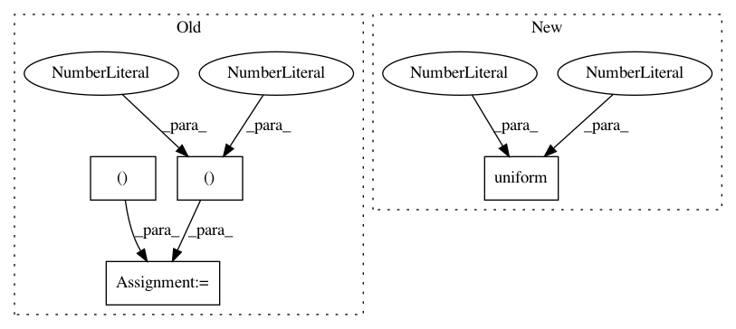

088f8ebb69e21c7759af44c6d207a266f4a5d175,python/ray/tune/examples/skopt_example.py,,,#,29
Before Change
"steps": 100,
}
}
optimizer = Optimizer([(0, 20), (-100, 100)])
previously_run_params = [[10, 0], [15, -20]]
known_rewards = [-189, -1144]
algo = SkOptSearch(
optimizer, ["width", "height"],
metric="mean_loss",
mode="min",
points_to_evaluate=previously_run_params,
evaluated_rewards=known_rewards)
scheduler = AsyncHyperBandScheduler(metric="mean_loss", mode="min")
tune.run(
easy_objective,
name="skopt_exp_with_warmstart",
search_alg=algo,
scheduler=scheduler,
**config)
// Now run the experiment without known rewards
algo = SkOptSearch(
optimizer, ["width", "height"],
metric="mean_loss",
mode="min",
points_to_evaluate=previously_run_params)
scheduler = AsyncHyperBandScheduler(metric="mean_loss", mode="min")
tune.run(
easy_objective,
name="skopt_exp",
After Change
"num_samples": 10 if args.smoke_test else 50,
"config": {
"steps": 100,
"width": tune.uniform(0, 20),
"height": tune.uniform(-100, 100),
"activation": tune.choice(["relu", "tanh"])
}
In pattern: SUPERPATTERN
Frequency: 3
Non-data size: 4
Instances
Project Name: ray-project/ray
Commit Name: 088f8ebb69e21c7759af44c6d207a266f4a5d175
Time: 2020-09-07
Author: krfricke@users.noreply.github.com
File Name: python/ray/tune/examples/skopt_example.py
Class Name:
Method Name:
Project Name: keras-team/keras
Commit Name: f23f2ff2c96537274beb99aca8417f054f817501
Time: 2016-08-27
Author: francois.chollet@gmail.com
File Name: examples/neural_style_transfer.py
Class Name:
Method Name:
Project Name: ray-project/ray
Commit Name: 2fac66650d131b93041836c1566587a7a4800af6
Time: 2020-09-04
Author: krfricke@users.noreply.github.com
File Name: python/ray/tune/examples/bayesopt_example.py
Class Name:
Method Name: